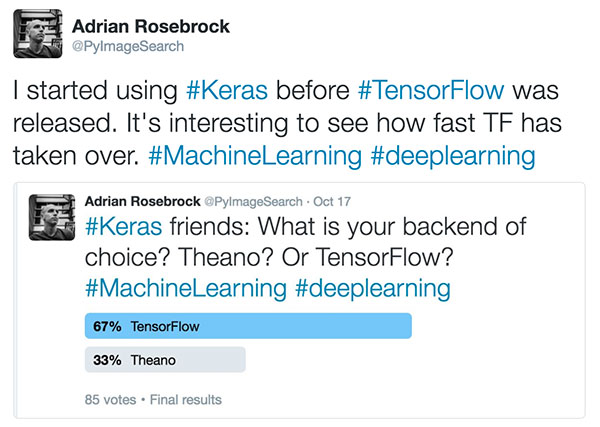

声明: 本文由DataScience编辑发表, 转载请注明本文链接mlln.cn, 并在文后留言
转载.
本文代码运行环境:
- windows10
- python3.6
- jupyter notebook
- tensorflow 1.x
- keras 2.x
安装TensorFlow后端的Keras
本文的第一部分简要讨论了Tensorflow后端以及为什么我们应该（或不应该）关心我们使用的是哪一个。我提供了详细的说明，您可以使用TensorFlow后端的Keras，以便在您自己的系统上进行机器学习。
使用TensorFlow还是Theano作为Keras后端
Keras只是更复杂的数值计算引擎(如TensorFlow和Theano)的包装。Keras封装了深度神经网络的大部分复杂性，为我们提供了一个非常简单，漂亮且易于使用的接口，可以快速构建/测试和部署深度学习模型。说到Keras，后端计算引擎有两种选择–TensorFlow或Theano。 Theano比TensorFlow更老，最初是为Keras选择后端的唯一选择。
那么为什么你改用TensorFlow而不是Theano（不再维护）？
简短的答案是TensorFlow非常灵活，允许您将网络计算部署到多个CPU，GPU，服务器甚至移动系统，而无需更改一行代码。这使得TensorFlow成为以体系结构无关的方式训练分布式深度学习网络的绝佳选择，这是Theano目前没有提供的。
坦白说，我在TensorFlow发布之前就开始使用Keras了 - 当时Theano是唯一可能的后端选择。
我没有考虑过我以后应该用Theano或TensorFlow。 Theano工作得很好，我需要它，所以为什么要费心转到TensorFlow呢？
当我在Twitter上进行最近的民意调查时，询问我的追随者在使用Keras时他们更喜欢的后端, 我才开始注意到：
67％的受访者表示他们使用TensorFlow作为他们的后端。老实说，我很惊讶。作为长期的Keras用户，我怎么可能成为少数？
这个67％的受访者可能会受到影响，因为TensorFlow现在是安装Keras时的默认后端……或者可能是因为我的许多粉丝都发现TensorFlow是一个更好，更有效的后端（并使用更多TensorFlow特定功能）。无论确切的原因是什么，有一点你无法提出异议：TensorFlow将继续占据统治地位。
如果你需要进一步的证据，你需要做的就是看看FrançoisChollet（Keras的创建者和维护者）的深度学习GitHub活跃度分析：(这个网站需要特殊工具才能访问, 所以我在下面截图了:)
正如我们所看到的，TensorFlow排在第一位（＃1）, 而Theano排名第9位。虽然Keras让我们切换后端变得简单（我们需要做的就是安装我们各自的后端并编辑一个简单的JSON配置文件），但我们仍然需要注意趋势告诉我们的是：TensorFlow将继续是Keras首选后端, 而且Theano已经不再维护。
安装python虚拟环境
你可以看我之前的一篇博客介绍如何安装python虚拟环境, 使用虚拟环境有很多好处, 尤其是当你需要在多个python环境切换的时候。 例如，如果你想使用Keras + Theano，你需要最新版本的Theano（即使用最新的GitHub仓库，它并不总是在PyPI上发布的版本）。但是，如果您想尝试像scikit-theano这样的库，则需要与Keras不兼容的以前版本的Theano。这时候, 如果你在不同的虚拟环境中安装不同的Theano就没有问题了。
本篇教程使用python3.6, 所以我们直接使用内置的venv模块创建虚拟环境。
创建虚拟环境
1 | python -m venv .env |
注: .env是虚拟环境所在文件夹
然后激活虚拟环境:
windows 下:
1 | .env/scripts/activate |
linux 下:
1 | source .env/bin/activate |
安装TensorFlow和Keras
使用pip安装这两个库, 确保你已经激活虚拟环境。
安装tensorflow
1 | pip install tensorflow |
测试tensorflow是否正常安装:
1 | $ python |
安装Keras
1 | pip install keras |
验证是否正确配置了keras.json文件
在我们走得太远之前，我们应该检查keras.json配置文件的内容。你可以在〜/ .keras / keras.json中找到这个文件, windows用户可以在你的用户文件夹下找到.keras / keras.json。使用您喜欢的文本编辑器打开它，并看一眼内容。默认值应如下所示：
1 | { |
具体来说，您需要确保将image_data_format设置为“channels_last”（表示使用TensorFlow图像维度排序而不是Theano的“channels_first”）。您还需要确保后端正确设置为tensorflow（而不是theano）。同样，默认的Keras配置应该满足这两个要求，但仔细检查并不会有什么坏处。
关于image_data_format的快速说明
您可能想知道image_data_format到底是什么。使用TensorFlow，图像表示为具有形状（高度，宽度，深度）的NumPy数组，其中深度是图像中的通道数。
但是，如果您使用Theano，则假定图像表示为（深度，高度，宽度）。当使用Keras时（以及很多if statments寻找这些特定配置），这种细微差别是令人头痛的根源。如果您在使用Keras（或与给定张量的形状相关的错误消息）时得到奇怪的结果，您应该：
- 检查你的后端
- 确保您的图像image_data_format与后端匹配
找不到您的keras.json文件？
在大多数系统上，在打开Python shell并直接导入keras包本身之前，不会创建keras.json文件（和相关的子目录）。
如果您发现系统上不存在〜/ .keras / keras.json文件，只需打开一个shell，（可选）访问您的Python虚拟环境（如果您使用的是虚拟环境），然后导入Keras：
1 | import keras |
从那里，您应该看到您的keras.json文件现在存在于您的本地磁盘上。如果您在导入keras时看到任何错误，请返回到本节顶部，并确保已正确更新keras.json配置文件。
测试 Keras + TensorFlow
为了测试你正确安装了 Keras + TensorFlow, 您只需要import keras, 然后会看到提示:Using TensorFlow backend.
Reference
注意
本文由jupyter notebook转换而来, 您可以在这里下载notebook
统计咨询请加QQ 2726725926, 微信 mllncn, SPSS统计咨询是收费的
微博上@mlln-cn可以向我免费题问
请记住我的网址: mlln.cn 或者 jupyter.cn